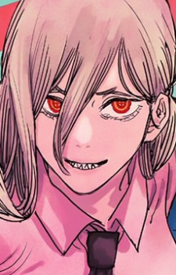

Описание
Пауэр имеет вид молодой девушки с блондинистыми волосами, доходящими до середины спины. Как дьявол, у нее есть светло-красные рога, торчащие из макушки, красные и желтые глаза, образующие крестообразный узор, и острые зубы с четко очерченными клыками.Пауэр обычно носит стандартную рубашку, галстук и брюки, необходимые для Охотников на демонов общественной безопасности. Обычно она носит лифчик с пушапом, чтобы увеличить размер груди. Она почти всегда носит свою куртку, свисающую на одном плече , придавая ей неопрятный вид.Член специального отряда Макимы.
|
Внешность

Другие персонажи
Аки Хаякава
Макима
Дэндзи
|